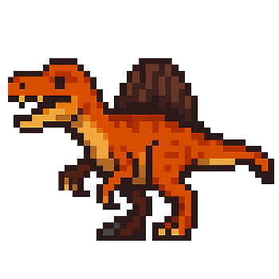
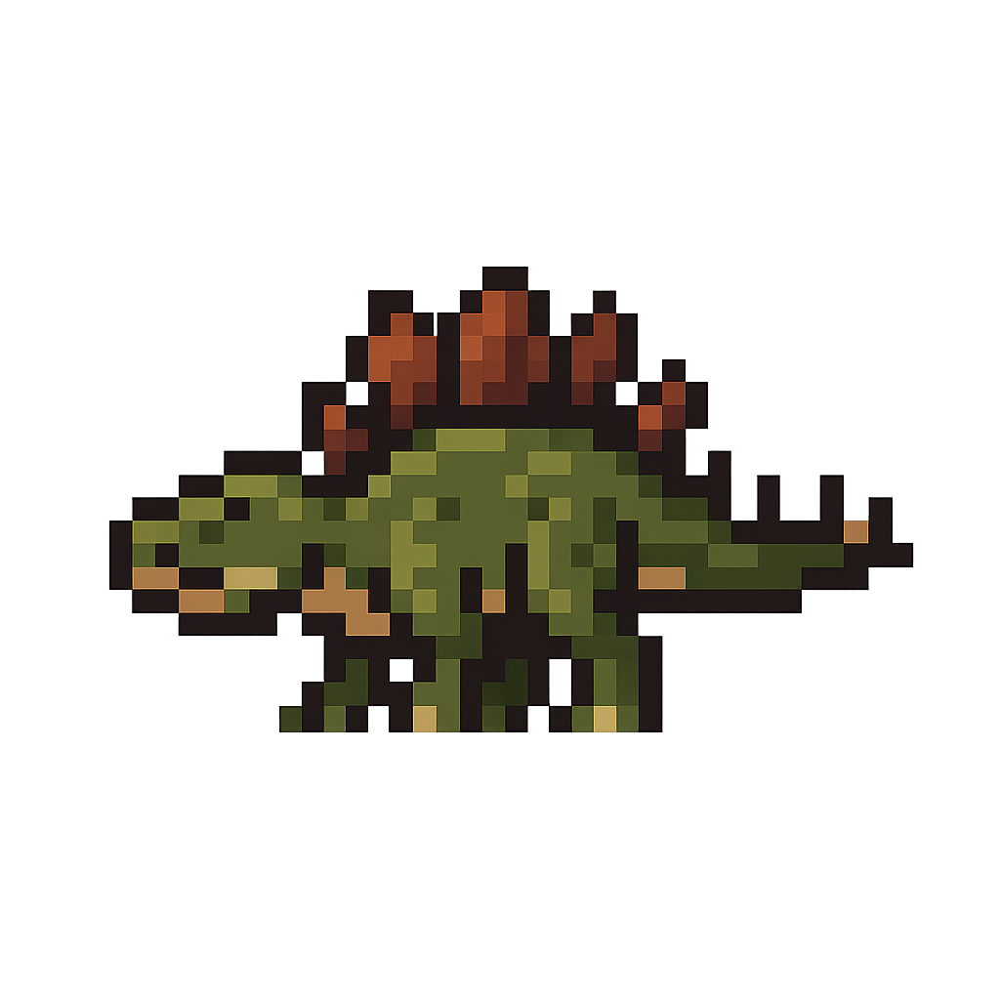
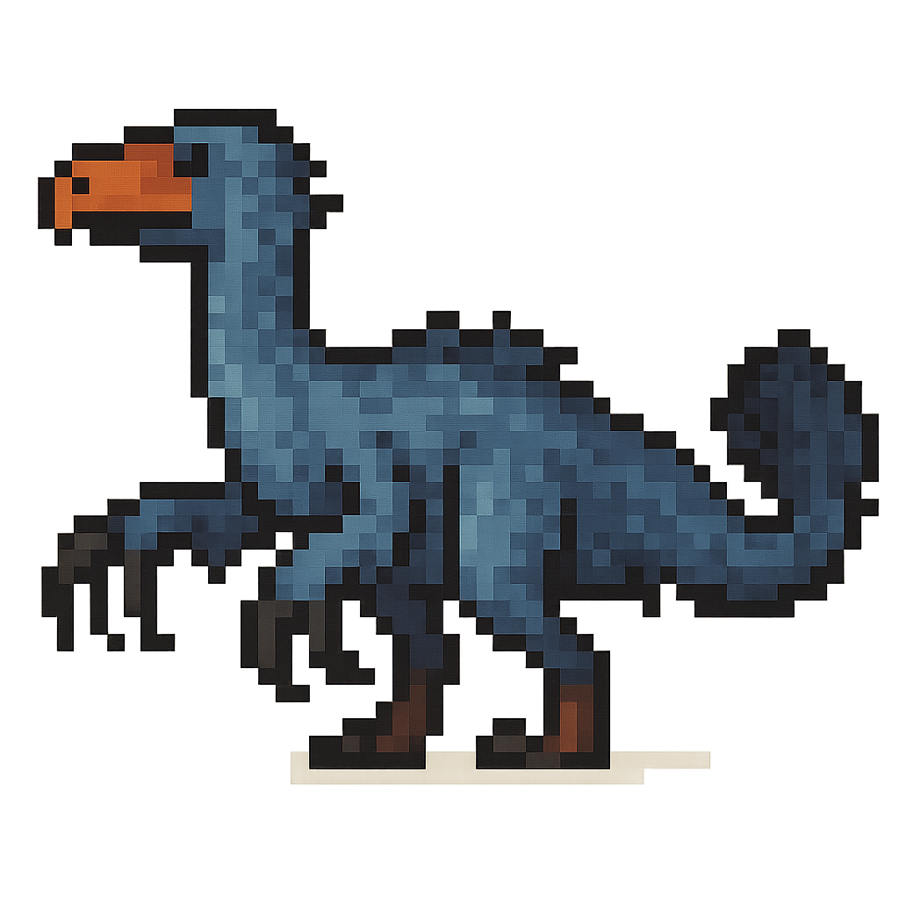
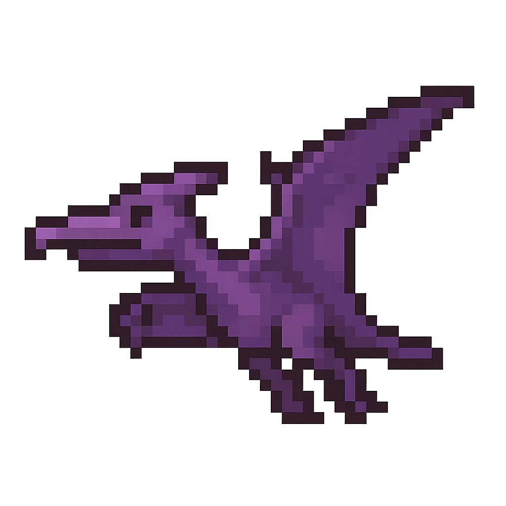
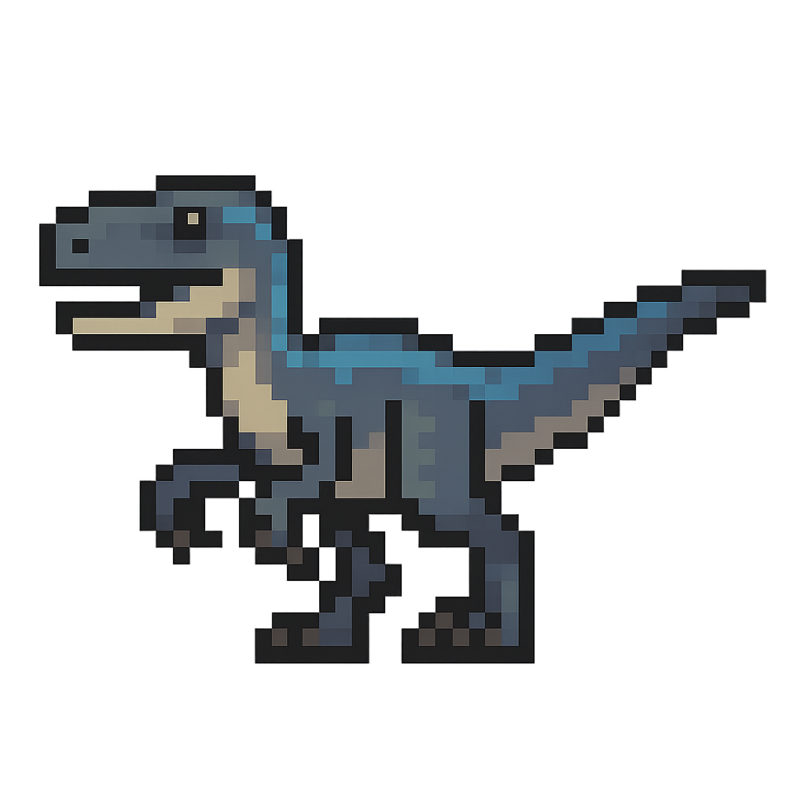
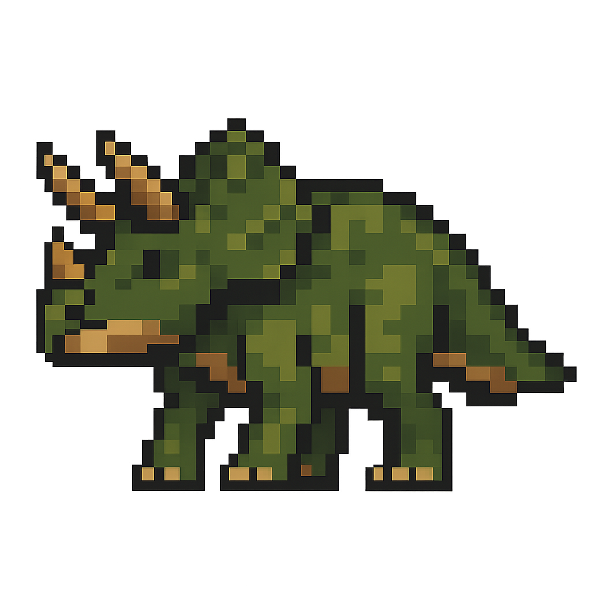

Espinossauro
#001

infos
- Comp.: 15–16 m
- Peso: ~7 t
- Classe: Reptilia
- Família: Spinosauridae
- Filo: Chordata
- Período: Cretáceo
curiosidades
- Vivia na água
- Vela dorsal alta
- Focinho alongado
- Comia peixes
- Norte da África
- Braços fortes
Estegossauro
#002

infos
- Comp.: ~9 m
- Peso: ~5 t
- Classe: Reptilia
- Família: Stegosauridae
- Filo: Chordata
- Período: Jurássico
curiosidades
- Placas dorsais
- Cauda com espinhos
- Cérebro pequeno
- Andava devagar
- Herbívoro baixo
- Am. do Norte
Therizinosaurus
#003

infos
- Comp.: ~10 m
- Peso: ~5 t
- Classe: Reptilia
- Família: Therizinosauridae
- Filo: Chordata
- Período: Cretáceo
curiosidades
- Garras de 1 m
- Penas no corpo
- Cauda peluda
- Herbí/Onívoro
- Pescoço longo
- Mongólia
Pterodáctilo
#004

infos
- Enverg.: 1–6 m
- Peso: leve
- Classe: Reptilia
- Família: Pterodactylidae
- Ordem: Pterosauria
- Período: Jurássico
curiosidades
- Réptil voador
- Asa de membrana
- Bico alongado
- Caçava peixes
- Planava muito
- Europa
Velociraptor
#005

infos
- Comp.: ~2 m
- Altura: ~0,5 m
- Peso: ~15 kg
- Classe: Reptilia
- Família: Dromaeosauridae
- Período: Cretáceo
curiosidades
- Penas reais
- Garra em foice
- Rápido e ágil
- Ásia Central
- Caça em grupo?
- “Ladrão veloz”
Triceratops
#006

infos
- Comp.: até 9 m
- Peso: ~10 t
- Classe: Reptilia
- Família: Ceratopsidae
- Filo: Chordata
- Período: Cretáceo
curiosidades
- Três chifres
- Gola óssea
- Herbívoro forte
- Enfrentou T. rex?
- Bico cortante
- Am. do Norte